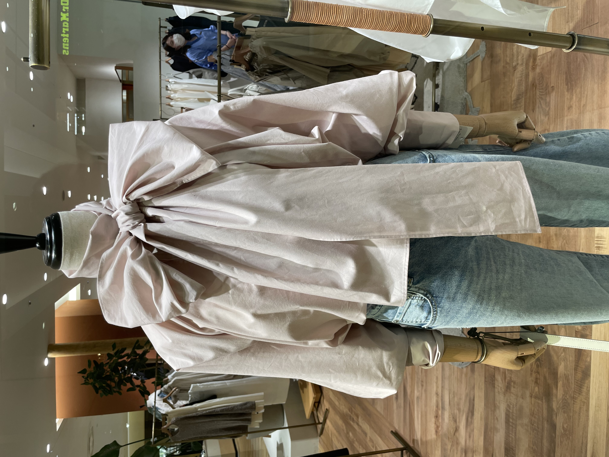
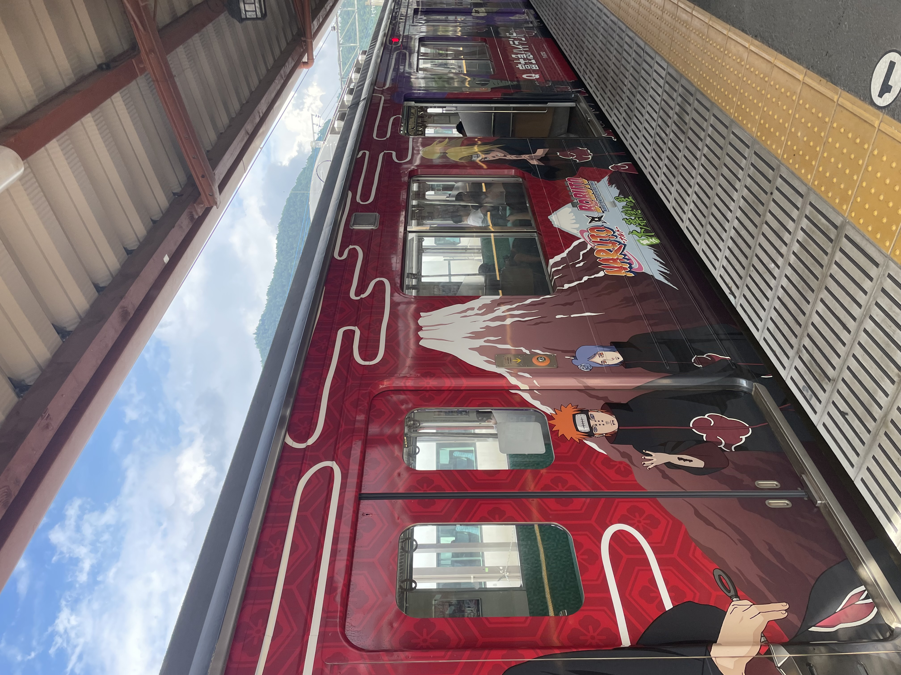

Kleding

De mode in Japan is een levendige mix van traditionele invloeden en moderne stijlen. Harajuku staat bekend om zijn eclectische en excentrieke mode, terwijl Japanse streetwear wereldwijd invloed heeft gehad. De stijlen variëren van minimalistisch tot schattig (kawaii) en avant-garde high fashion. Het vermengen van traditie met innovatie vormt de kern van de Japanse mode.
Geloof

Japan kent het Shintoïsme, gericht op natuurverering, en het Boeddhisme, dat invloedrijk is in de cultuur. Vaak vermengd in syncretisme, zijn deze twee religies belangrijk in het dagelijks leven. Tempels, heiligdommen en festivals vormen essentiële aspecten van de religieuze praktijk, naast respect voor voorouders en de natuur. Andere minderheidsgeloofsovertuigingen zoals het Christendom en de islam zijn ook aanwezig in Japan.
Geschiedenis
Japan heeft een complexe en rijke geschiedenis, gekenmerkt door perioden van isolatie, modernisering en groei, die hebben bijgedragen aan de unieke identiteit van het land. Het land groeide uit tot een imperialistische macht en nam deel aan de Tweede Wereldoorlog. Na de oorlog bloeide Japan opnieuw op als een economische reus. De focus verschoof naar technologische innovatie en economische groei, waardoor Japan een belangrijke speler werd in de wereldeconomie. Deze diverse geschiedenis heeft de Japanse identiteit gevormd en haar positie als een mondiale culturele en economische kracht versterkt.
Pop-cultuur

Japanse popcultuur omvat anime, manga, J-Pop, gaming en cosplay. Het is wereldwijd populair en heeft een enorme invloed, met fan-evenementen en een breed scala aan media die mensen over de hele wereld aanspreken. Ook een anime zoals pokemon is zeer populair, zo worden er zelfs vliegtuigen en treinen mee bedrukt. Daarnaast zijn Er ook genoeg mascotte karakters zoals hello kitty te vinden in het dagelijks leven. Zo worden er zelfs diamanten poppen van wel 1,320,000 Yen (8259 euro) verkocht.